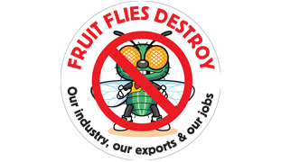

<html ng-app="ionicApp">
  <head>
    <meta charset="utf-8">
    <meta name="viewport" content="initial-scale=1, maximum-scale=1, user-scalable=no, width=device-width">

    <title>Tabs Example</title>

    <link href="lib/ionic/css/ionic.css" rel="stylesheet">
    <script src="lib/ionic/js/ionic.bundle.js"></script>
    <script src="js/app.js"></script>
  </head>

  <body>

    <ion-nav-bar class="bar-energized">
      <ion-nav-back-button>
      </ion-nav-back-button>
    </ion-nav-bar>

    <ion-nav-view></ion-nav-view>


    <script id="templates/tabs.html" type="text/ng-template">
      <ion-tabs class="tabs-icon-top tabs-dark">

        <ion-tab title="Home" icon="ion-home" href="#/tab/home">
          <ion-nav-view name="home-tab"></ion-nav-view>
        </ion-tab>

        <ion-tab title="About" icon="ion-ios-information" href="#/tab/about">
          <ion-nav-view name="about-tab"></ion-nav-view>
        </ion-tab>

        <ion-tab title="Contact" icon="ion-ios-world" ui-sref="tabs.contact">
          <ion-nav-view name="contact-tab"></ion-nav-view>
        </ion-tab>

      </ion-tabs>
    </script>

    <script id="templates/home.html" type="text/ng-template">
      <ion-view view-title="Home">
        <ion-content class="padding">
          <p>
            <a class="button button-full button-calm" href="#/tab/facts">Fact 1</a>
          </p>
          <p>
            <a class="button button-full button-calm" href="#/tab/facts2">Facts 2</a>
          </p>
          <br>
          <div class="list card">

  <div class="item item-avatar">
  <i class="icon ion-thumbsup"></i>
    <h2>Up and running</h2>
    <p>This support app is growing</p>
  </div>

  <div class="item item-image">
    
  </div>

  <a class="item item-icon-left assertive" href="#">
    
    <a class="button icon icon-right ion-android-walk" href="http://www.appfarm.co.za">Get connected</a>
  </a>

</div>
        </ion-content>
      </ion-view>
    </script>

    <script id="templates/facts.html" type="text/ng-template">
      <ion-view view-title="Facts">
        <ion-content class="padding">
          <p>South Africa is host to two species of fruit flies of economic importance, the Mediterranean fruit fly (Ceratitis capitata) and the Natal fruit fly (C. rosa). Both species are international quarantine pests.</p>
          <p>Fruit Fly Africa is an industry owned service body created to plan, co-ordinate and execute area-wide fruit fly control programmes. This is done in collaboration with producers and local government in various production regions in partnership with the National Department of Agriculture, Forestry and Fisheries (DAFF).</p>
          <p>The programmes are based on international best practice as contained in the Technical Manual drafted in line with the requirements and conditions set by the International Atomic Energy Association (IAEA) and the Agricultural Research Council (ARC). Area based programmes are tailor-made for specific production regions. The Sterile Insect Technique (SIT) forms part of the integrated approach.</p>
          <p>
            <a class="button icon ion-home" href="#/tab/home"> Home</a>
            <a class="button icon icon-right ion-chevron-right" href="#/tab/facts2">More Facts</a>
          </p>
        </ion-content>
      </ion-view>
    </script>

    <script id="templates/facts2.html" type="text/ng-template">
      <ion-view view-title="Also Factual">
        <ion-content class="padding">
          <p>SIT technology was initiated by E.F. Knipling in the 1930s, when he worked with the screwworm fly, a devastating scourge of cattle in North America. The first successful use of SIT to control screwworm was on the island of Curaçao in 1953.
Since then SIT has been further refined and developed for a number of insect pests mainly by the United States Department of Agriculture and the FAO/IAEA.</p>
          <p>SIT has been developed to suppress or eradicate more than 20 insect pests, many of them being fruit flies and other fruit pests. There are at least 15 facilities around the world rearing Mediterranean fruit flies, and another 10 or so rearing other species of fruit flies. Production of sterile pupae varies from approximately 5 million per week to as many as 5 billion per week, the latter at the El Pino Facility in Guatemala.</p>
          <p></p>
          <p>
            <a class="button icon ion-home" href="#/tab/home"> Home</a>
            <a class="button icon ion-chevron-left" href="#/tab/facts"> Scientific Facts</a>
          </p>
        </ion-content>
      </ion-view>
    </script>

    <script id="templates/about.html" type="text/ng-template">
      <ion-view view-title="About">
        <ion-content class="padding">
          <h3>About the new mobile application</h3>
          <p>a library of mobile-optimized HTML, CSS and JS components for building a interactive app.</p>
          <p>Built with Sass and optimized for AngularJS.</p>
          <p>
            <a class="button icon icon-right ion-chevron-right" href="#/tab/navstack">Screenshots</a>
          </p>
        </ion-content>
      </ion-view>
    </script>

    <script id="templates/nav-stack.html" type="text/ng-template">
      <ion-view view-title="Tab Nav Stack">
        <ion-content class="padding">
          <p></p>
        </ion-content>
      </ion-view>
    </script>

    <script id="templates/contact.html" type="text/ng-template">
      <ion-view title="Contact">
        <ion-content>
        <div class="card">
          <div class="item item-text-wrap">
          Admin – Eloise du Plessis
Tel: 021-882 9541
Fax: 086 756 8656
Email: info@fruitfly.co.za
          </div>
        </div>

        <div class="card">
          <div class="item item-text-wrap">
          Manager – Nando Baard
Cell: 084 217 0285
Fax: 086 756 8656
Email: nando@fruitfly.co.za
          </div>
        </div>

        <div class="card">
          <div class="item item-text-wrap">
          Facility Supervisor – Nathan Vermeulen
Tel: 021-882 9541
Email: nathan@fruitfly.co.za
          </div>
        </div>

        <div class="card">
          <div class="item item-text-wrap">
          Facility Maintenance Manager – Jerome Johnson
Tel: 021-882 9541
Email: jerome@fruitfly.co.za
          </div>
        </div>

        <div class="card">
          <div class="item item-text-wrap">
          Next
          </div>
        </div>
        </ion-content>
      </ion-view>
    </script>

  </body>
</html>
